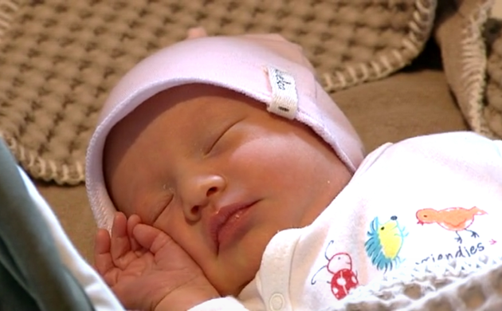

Kraamverzorgende Op Rooster
- ✓ Je weet precies waar je aan toe bent.
- ✓ Dienst duurt max. 8 vaste dagen.
- ✓ 4 of 6 dagen vrij: jij mag kiezen!
- ✓ Op werkdagen tot max. 16.00 inzetbaar.

Waarom Kraamzorg Mama?
Bekijk de video
De mens houdt van nature niet van al te veel verandering. Stel deze gerust!
Ja, wij volgen de geldende cao en denken daarnaast mee over wat jij nodig hebt om prettig te kunnen werken.
Er zijn verschillende contractvormen mogelijk. Samen kijken we welke vorm past bij jouw beschikbaarheid en werkprofiel.
Ja, cursussen en ontwikkelmogelijkheden worden intern aangeboden, zodat je kunt blijven groeien in je vak.
Ja, we houden waar mogelijk rekening met jouw situatie en zoeken samen naar een werkvorm die past bij je gezin.